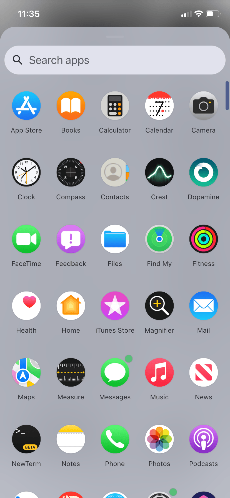
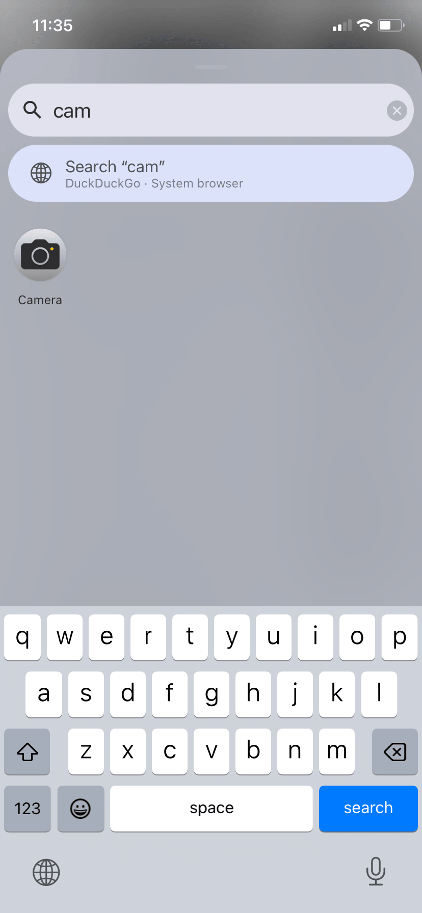
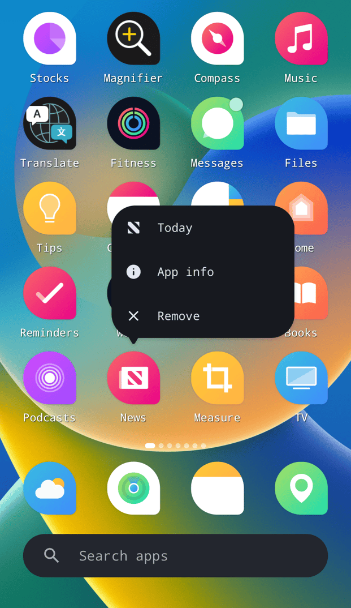
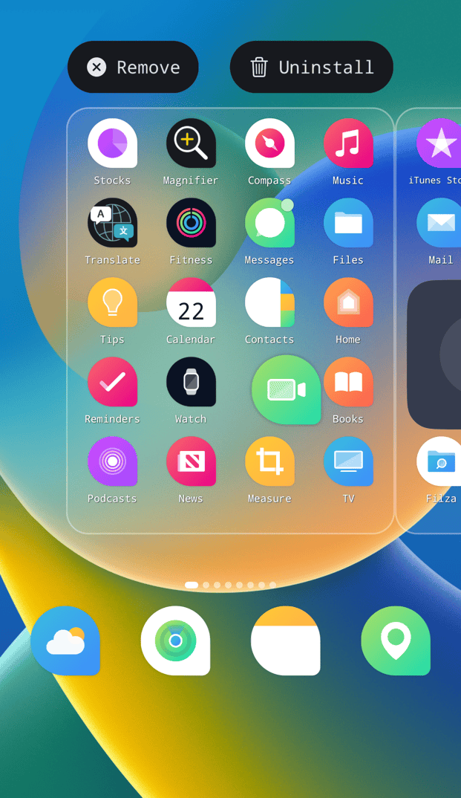
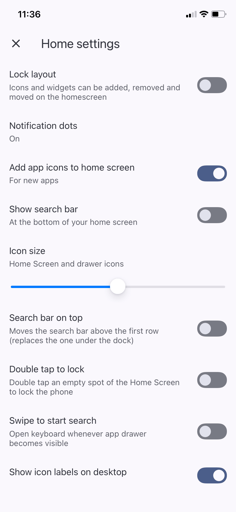

← All tweaks
Make your iPhone's Home Screen work like Android's. Catapult swaps the iOS Home Screen for Trebuchet, the one from LineageOS. Everything else stays iOS.
- An app drawer. Swipe up for every app in one A to Z list. Its search box also does quick sums, converts units and searches the web.
- A tidier Home Screen. Folders open on one page, and widgets show the time, weather, your music and your batteries (AirPods too).
- Your look. Icon shapes, icon themes and your own font, on the Home Screen or across all of iOS. Emoji stay Apple's.
- In your language. Catapult follows your iPhone's language.
- It still feels like an iPhone. Apps open and close with Apple's own animation, straight from their icon.
Everything it can do →
- Version
- 0.1.0~beta3
- Jailbreak
- Rootless, Rootful
Get it from the pwnapple repo: add it to your package manager, then search for Catapult.
9:41 9:41
9:41
9:41
9:41
9:41
9:41
How it works
1. Swipe up for the app drawer: every app A to Z, with a letter bar to jump. 2. Long-press an empty spot for Wallpaper & style (icon shapes, grid size), Widgets and Home settings. 3. Long-press an app for its shortcuts, App info and Remove. Drag it onto another app to make a folder. 4. Type in the search bar: apps, sums like 9+2, conversions like 5 km in mi, or a web search.
See it in action and everything it can do →
What's New in 0.1.0~beta3
- Rootful jailbreaks: Catapult now has a rootful build for iOS 14 and 15 too. Your package manager picks the right one. On iOS 14, theming icons across iOS isn't available (it needs iOS 15).
- Fixed: on iOS 15.0 and 15.1, iPhone XS and newer, Catapult could crash the Home Screen when it loaded.
- The app drawer's background now takes the same tint as Quick Settings, matching LineageOS. Thanks to MakrSas for the idea.
- The rootful build hasn't been tried on a phone yet. If something's off, tell me.
Works on
- Rootless jailbreaks: iOS 15 to 18. Rootful jailbreaks: iOS 14 and 15. Your package manager picks the right one.
- Tested on iOS 15.8.6, 16.2, 16.7, 17.5.1 and 18.6.2, on an iPhone 7, 8 Plus, SE 2nd gen, 11 Pro and 11 Pro Max.
- Not tried yet: iPads, landscape, the rootful build, and iOS 15 on iPhone XS and newer.
- Safe to try: if something goes badly wrong, Catapult switches itself off and your normal Home Screen comes back. Tell me what happened.
Good to know
- iOS widgets: they can't go on this Home Screen, so Catapult has its own.
- Portrait only for now.
- Your font across iOS: apps pick it up the next time they open. If the font comes with a Bold file, put it in the same folder and bold text uses it.
- FrostBoard, SnowBoard or Anemone? Keep using them. Catapult leaves theming the rest of iOS to them.
- Material You (by MakrSas) adds colours from your wallpaper.
- Arabic and Hebrew: translated, but the layout doesn't flip right to left yet.
Credits
Built on MakrSas's Trebuchet port (Apache 2.0). Thank you, MakrSas.
Trebuchet and Launcher3 by LineageOS and the Android Open Source Project (Apache 2.0). Roboto Flex by Google (OFL). Full notices in Settings > About and on GitHub.
Catapult by Jond_ie.
Changelog2 earlier versions
Beta 2
- Catapult speaks your language. It follows your iPhone's language: LineageOS's own text in 96 languages, and everything Catapult added in 27, including Spanish, Portuguese, French, German, Russian, Arabic, Hindi, Japanese, Korean and Chinese.
- Fixed: copying a search answer like 3,5 (decimal comma) pasted 35.
- Weather follows your iPhone's °C / °F setting.
- Tested in Simplified Chinese on an iPhone 8 Plus. If a line reads wrong in your language, tell me.
Beta 1
- First public beta.
- Safe to try: if something goes badly wrong, Catapult switches itself off and your normal Home Screen comes back. A normal respring doesn't count.
- Had MakrSas's Trebuchet? Catapult replaces it and keeps your layout.